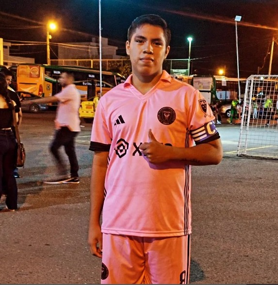

Nosotros
Nosotros somos un grupo de estudiantes de la especialidad INFORMÁTICA provenientes del "Colegio de Bachillerato Ismael Pérez Pazmiño" quienes queremos ayudar a una panificadora a llegar a más personas y así incrementar las ventas de dicha panificadora, mediante la elaboracion de una página web planeamos hacerlo.
Todo esto lo lograremos timando inspiración de videos de Youtube aplicando las plantillas que se presentan en los vídeos a la vez que aprendemos a como crear nuestras propias plantillas.
Carrera Barzola Joel Nicolás
Joel Nicolás Carrera Barzola es un estudiante del Colegio de Bachillerato Ismael Pérez Pazmiño, realiza sus estudios desde 8vo año de básico y siguió estudiando hasta llegar a 10mo año de educación básica donde tuvo que estudiar desde su casa vía Zoom gracias a la pandemia de Covid-19 que afectó gravemente a sus estudios pues la calidad del internet era pésima al sus hermanos también ocupar el internet para sus clases pues se le complicó.
Pero pudo llegar hasta donde está ahora, cursando el 3ero de Bachillerato paralelo "C" en la especialidad INFORMÁTICA. Ayudó en la busqueda de los vídeos para poder hacer la página
Celis Rogel John Jairo
John Jairo Celis Rogel de 17 años de edad, estudia actualmente en el Colegio de Bachillerato Ismael Pérez Pazmiño, realizó sus estudios desde 8vo año de educación general básica, y siguió estudiando hasta llegar a 3er año de Bachillerato.
Le gusta mucho lo que es la elaboracion de páginas web mediante html y css, y actualmente quiere aprender el lenguaje de JavaScript para poder hacer páginas de manera idependiente sin necesidad de seguir vídeos para hacer sus propias páginas webs.
John ayudó con lo que es la codificación de la pág dando ideas de como quedaba mejor y explicando algunas cosas para que nosotros podamos entender

Jonathan Moisés Loaiza Freire
Jonathan Moisés Loaiza Freire tiene 17 años de edad y estudia en el "Colegio de Bachillerato Ismael Pérez Pazmiño" lleva estudiando desde 8vo año de básica y en 10mo y 1ero realizó sus estudios en virtual vía Zoom y Teams por la pandemia del Covid-19.
le encanta mucho lo que es el gimnasio y hacer ejercicio pero no le gusta lo que son los deportes, le encantancomer saludable para mantener una vida sana.
El ayudó en lo que es dividiendo las tareas en el grupo, o sea que cada uno hará una parte de la página.

Sanmartin Riera Darwin Kenedy
Kenedy Sanmartin de 17 años estudia en el Colegio de Bachillerato Ismael Pérez Pazmiño cursando el 3ero de bachillerato en la especialidad informática paralelo "C", estuia en el Ismael desde 1ero informática via Teams y fue en 2ndo de bachillerato donde pudo conocer a sus compañeros en presencial.
ayudó en la elaboración de está pag la sección de "Nosotros" quien tuvo que inspirarse de videos de YouTube para poder hacer esta página.
Romero Guanoquiza Wilson Stalin
Wilson Stalin Romero Guanoquiza tiene 17 años y estudia en el Colegio de Bachillerato Ismael Pérez Pazmiño y actualmente está en el 3ero de bachillerato en la especialidad informática.
Le gusta tocar guitarra y hacer ejercicio.
Ayudó al igual que Celis con la codificación de casi toda la página, y también con las demás partes de la página.